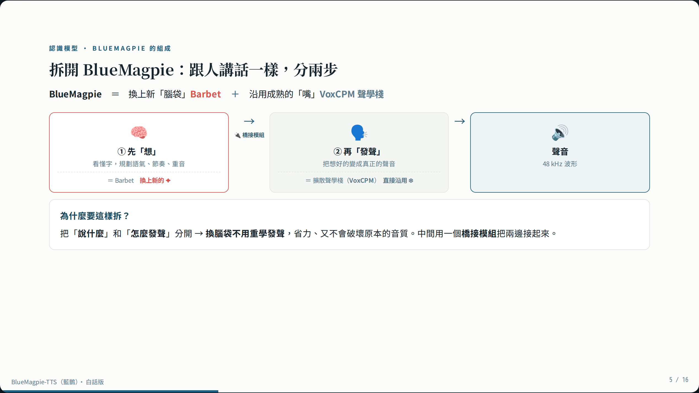

一個會「講台灣華語」的開源語音模型——打字它念出來，錄一段你的聲音，它就能用你的聲音念別的話。
由台灣開源社群 OpenFormosa 釋出 · 發聲沿用 VoxCPM（OpenBMB）· Portal 作者 Gary Chen
合成語音、試聽內建語者、用麥克風克隆你自己的聲音。需後端 GPU。
白話講解模型組成、克隆原理、與一般 TTS 的差異。← → 翻頁。
FastAPI 推論服務 + 純前端 Portal + 測試。MIT 授權。
